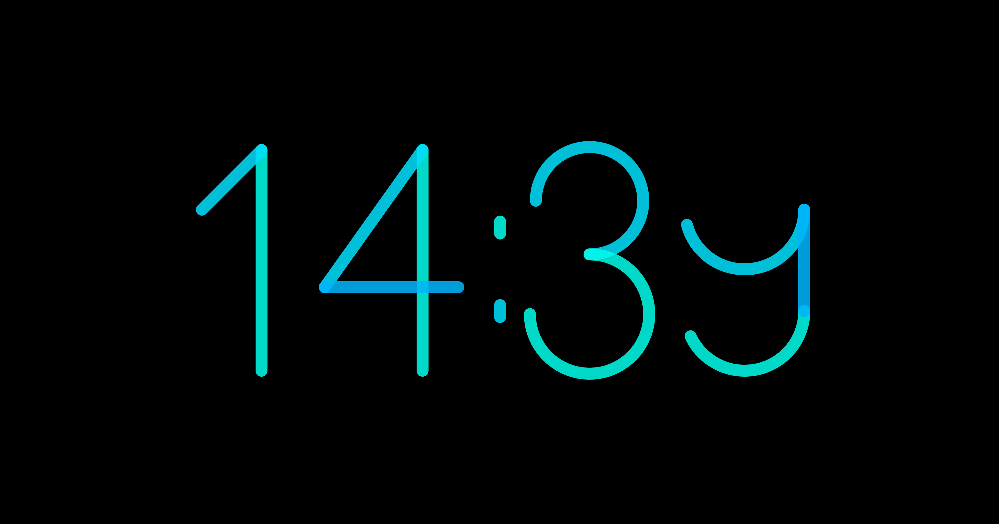

Watch
Um den Fortschritt der Zeit abzubilden, besteht die Minutenangabe diese Uhr aus einzelnen geometrischen Formen, die sich im Laufe der Zeit zu den kompletten Zahlen zusammenfügen. So ist jede Zahl erst vollständig lesbar, wenn die entsprechende Minute komplettiert ist. Um den Aufbau der Zahlen zu verdeutlichen, wurde den einzelnen Bestandteile jeweils leicht unterschiedliche Farbtöne gegeben. Auf diese Weise wird die Unterteilung der Zeit in verschiedene Einheiten auch optisch wahrnehmbar.
Die Elemente der Zahlen sind komplett in P5.js aufgebaut. Diese sind dabei an eine Zeitvariabel gebunden, über welche der kontinuierliche Aufbau der einzelnen Zahlen koordiniert wird. Um die richtigen Zahlen zur rechten Zeit darzustellen, wird die aktuelle Zeit über eine if/else-Schleife abgefragt und je nach Zeitpunkt eine anderer Zahlenwert eingeblendet.

Projekt ansehen